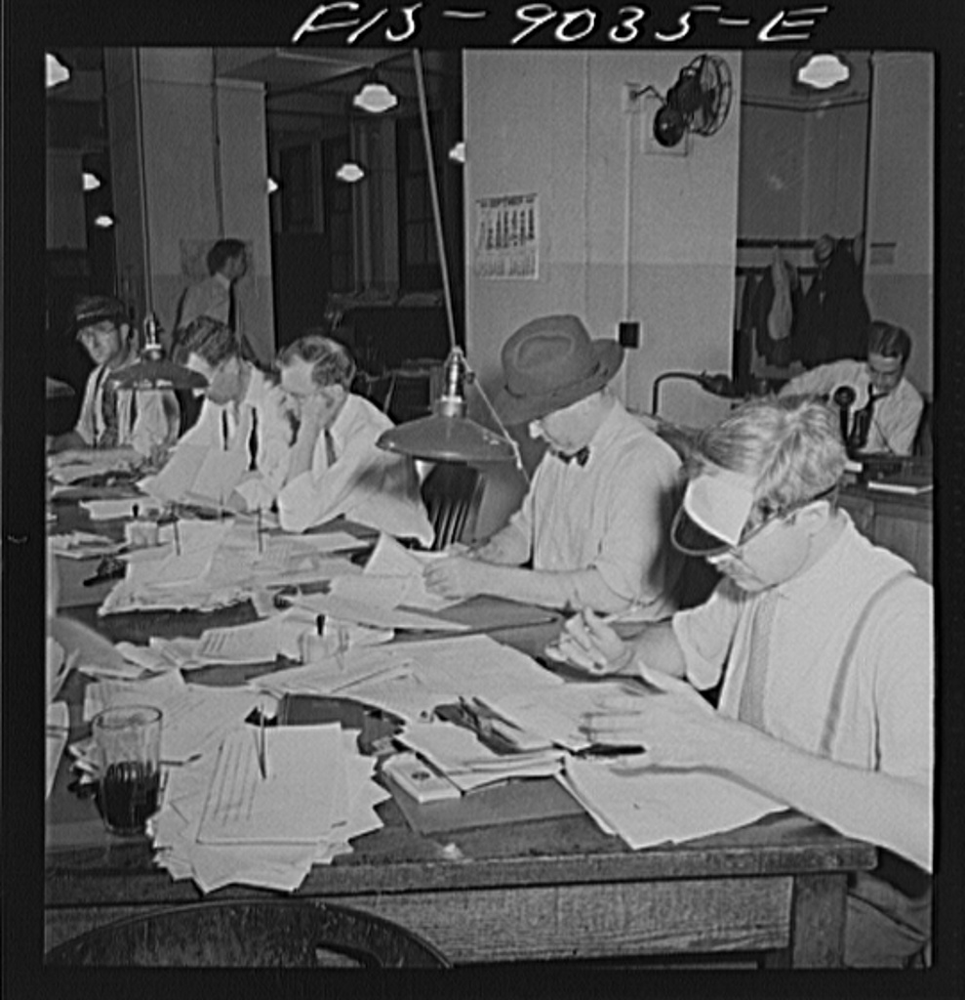

Executive Summary
뉴욕주 의회가 NY FAIR News Act를 상·하원 모두에서 통과시켰다. 이 법은 AI가 뉴스 콘텐츠를 만들 때 페이지 최상단에 그 사실을 밝히라고 요구하는 데서 그치지 않는다. AI가 생성한 기사·오디오·이미지·영상은 편집권을 가진 사람이 게재 전에 반드시 검토해야 하고, 기자의 취재원과 기밀 자료는 AI 시스템이 건드릴 수 없도록 기술적으로 차단해야 한다. 이 글은 그 세 겹의 의무가 무엇을 규정하는지, 그리고 이미 시행이 임박한 EU AI법의 라벨링 의무와 어떻게 갈라지는지를 본다.
핵심은 규제가 닿는 지점이 이동했다는 데 있다. EU AI법이 "이것은 AI가 만들었다"를 소비자에게 알리는 결과물 단계를 겨눴다면, 뉴욕의 법은 그 결과물이 만들어지는 워크플로 안으로 들어간다. 사람이 반드시 개입해야 하는 지점을 못 박고, AI가 접근하면 안 되는 데이터 구역을 지정한다. 노동 보호 조항도 함께 담겨, AI를 이용한 인력 대체와 임금 삭감을 금지한다.
아직 Kathy Hochul 주지사의 서명이 남아 있고, 서명 후 60일이 지나야 발효된다. 뉴욕 뉴스출판협회는 편집국에 특정 공시를 강제하는 것이 수정헌법 1조의 표현의 자유를 침해한다며 맞서고 있다. 통과와 발효 사이의 이 구간에서, 데이터에 누가 손댈 수 있는가를 법이 직접 규정하기 시작했다는 신호를 읽어 둘 필요가 있다.
60일
서명 후 발효까지
Hochul 주지사 서명 대기 중
$5,000
반복 위반 시 건당 과징금
1차 위반은 $1,000
76%
AI의 뉴스 도용을 우려하는 미국인
입법 배경이 된 여론
3,500+
2005년 이후 폐업한 미국 신문사
뉴스룸 인력은 10년간 약 2/3 감소

라벨에서 멈추지 않은 세 가지 의무
NY FAIR News Act(공식 명칭 New York Fundamental Artificial Intelligence Requirements in News Act)는 Patricia Fahy 상원의원과 Nily Rozic 하원의원이 발의했다. AI가 뉴스룸에 들어오면서 벌어지는 문제를 공개 표시 하나로 덮지 않고, 세 지점에서 각각 다른 방식으로 손을 댄다.
1.1AI가 만든 콘텐츠임을 눈에 띄게 알린다
AI가 실질적으로 작성하거나 생성한 콘텐츠는 페이지 최상단에 그 사실을 눈에 띄게 표시해야 한다. 오디오 콘텐츠라면 방송 시작 시점에 구두로 고지해야 한다. 적용 범위는 기사에 그치지 않고 오디오·이미지·영상까지 아우른다. 여기까지는 EU AI법의 라벨링 발상과 크게 다르지 않다.
1.2게재 전에 사람이 반드시 검토한다
이 법의 첫 번째 차별점이 여기 있다. AI가 생성한 모든 뉴스 콘텐츠는 편집 권한을 가진 사람이 게재 전에 검토해야 한다. 조문(일반사업법 § 1154)은 "편집 권한을 가진 사람의 검토를 거친 뒤에야 게재될 수 있다"고 못 박는다.
라벨은 결과물에 붙는 꼬리표지만, 검토 의무는 결과물이 세상에 나오기 전의 워크플로를 규정한다. AI가 초안을 쓰더라도 공개 정보로 바뀌는 마지막 관문에 사람을 의무적으로 세운다는 뜻이다.
1.3취재원과 기밀 자료를 AI 접근에서 차단한다
두 번째 차별점은 데이터 쪽이다. 고용주는 기자의 취재원과 기밀 자료가 AI 시스템에 접근되지 않도록 안전장치를 세워야 한다(민권법 § 79-h에 신설). 위치 추적이나 감시 같은 어떤 수단으로 수집된 정보든 마찬가지다.
현실적으로는 비밀 제보자 문서나 원본 인터뷰 자료를 외부 머신러닝 모델에 투입하는 행위를 기술적으로 막으라는 요구다. 특정 데이터 카테고리를 AI가 들어갈 수 없는 구역으로 지정한 셈이다.
여기에 두 겹의 장치가 더 붙는다. 하나는 직원 공개다. 뉴스 미디어 고용주는 AI 도구를 어떻게, 언제 사용하는지, 어떤 시스템을 무슨 목적으로 쓰는지를 직원에게 완전히 공개해야 한다. 독자만이 아니라 뉴스룸 내부에서 함께 일하는 사람에게도 AI의 개입 지점을 투명하게 밝히라는 요구다. 다른 하나는 노동 보호다. AI를 이용해 인력을 대체하거나 근무시간을 줄이고 임금을 깎는 행위, 단체협약을 약화시키는 행위를 금지한다. 직원의 저작물로 AI를 훈련시키려면 사전 동의와 보상 협의를 거쳐야 한다(§ 1155). 위반 시 과징금은 1차 $1,000, 2차 이상은 건당 $5,000이다. AFL-CIO 뉴욕주지부, 작가조합(WGA East·West), SAG-AFTRA, NewsGuild 같은 노동·창작 단체가 이 법을 지지한 이유도 여기에 있다.
EU AI법과 무엇이 다른가
페블러스가 앞서 정리한 EU AI법 8월 2일 투명성 의무 글에서, Article 50은 챗봇이 자신을 AI라고 밝히고 딥페이크에 "인위적으로 생성됨"을 표시하도록 요구한다고 봤다. 소비자가 무엇을 보고 있는지 알 권리를 지키는, 출력물에 붙는 라벨 중심의 규제다.
NY FAIR News Act는 그 라벨을 출발점으로 삼되, 두 가지를 더 요구한다. 결과물이 나오기 전 사람의 검토를 의무화하고, 특정 데이터에 대한 AI 접근을 원천 차단한다. 규제가 겨누는 층위가 결과물에서 프로세스와 데이터 접근으로 이동한 것이다.
| 항목 | EU AI법 Article 50 | NY FAIR News Act |
|---|---|---|
| 규제 층위 | 결과물 (라벨) | 결과물 + 프로세스 + 데이터 접근 |
| AI 콘텐츠 | "인위적으로 생성됨" 표시 | 최상단 공시 + 게재 전 인간 검토 |
| 인간 개입 | 없음 (라벨만) | 편집권 가진 사람의 게재 전 검토 의무 |
| 취재원·기밀 자료 | 해당 없음 | AI 접근 원천 차단 의무 |
| 노동 보호 | 해당 없음 | AI 활용 인력 대체·임금 삭감 금지 |
두 법을 겹쳐 보면 규제의 진행 방향이 드러난다. 처음에는 "AI가 만든 것에 표시를 붙여라"였고, 이제는 "AI가 어떤 데이터에 손댈 수 있고 언제 사람이 개입해야 하는가"까지 규정한다. 라벨은 소비자를 보호하고, 검토와 접근 통제는 정보가 만들어지는 방식 자체를 겨냥한다.
데이터 거버넌스의 새 전선
데이터 거버넌스를 다뤄 온 입장에서 보면, 이 법의 취재원 보호 조항은 익숙한 개념을 법령의 언어로 옮겨 놓은 것이다. 데이터 분류와 접근 통제다. "기자의 취재원은 AI가 들어갈 수 없는 구역"이라는 문장은 결국 특정 데이터 카테고리에 접근 등급을 매기고, 그 경계를 넘는 시스템을 차단하라는 요구와 같다.
인간 검토 의무도 같은 발상에서 나온다. AI의 출력이 공개 정보로 전환되는 지점에 사람이라는 게이트를 세운 것이다. 데이터 파이프라인에 검증 단계를 의무적으로 끼워 넣는 설계와 다르지 않다. 그동안 조직이 자율적으로 설계하던 접근 권한과 검증 절차가, 이제 규제가 명시하는 요건으로 넘어오고 있다.
이 패턴이 뉴스룸에만 머물 이유는 없다. 환자 기록, 법률 문서, 금융 거래 데이터처럼 민감도가 높은 영역에서도 "이 데이터는 어떤 AI가, 어느 단계에서 접근할 수 있는가"라는 질문은 똑같이 성립한다. 누가 어떤 데이터에 손댈 수 있는가를 명확히 그어 두는 일이, 기업 데이터 아키텍처의 설계 원칙이자 규제 준수의 요건으로 함께 자리 잡아 가고 있다.
페블러스 노트. 데이터의 출처를 추적하고 접근 경계를 관리하는 일은 페블러스가 AI-Ready Data에서 다뤄 온 주제와 겹친다. 규제가 새 시장을 만들었다기보다, 데이터를 분류하고 접근을 통제하는 오래된 실무가 이제 법의 언어로 다시 쓰이고 있다는 쪽에 가깝다.
반대 논거와 남은 변수
이 법이 아무 마찰 없이 자리 잡은 것은 아니다. 뉴욕 뉴스출판협회(NYNPA)는 편집국에 특정 공시를 강제하는 것이 수정헌법 1조가 금지하는 강요된 표현(compelled speech)에 해당한다고 본다. Wooley v. Maynard, Miami Herald v. Tornillo 같은 판례를 근거로, 국가가 언론에 무엇을 어떻게 말하라고 강제할 수 없다는 것이 반대의 핵심이다.
R Street Institute 같은 단체는 다른 각도에서 우려한다. 이미 재정난에 몰린 저널리즘 산업에 컴플라이언스 부담을 더하면 중소 언론사의 폐업을 앞당길 수 있다는 것이다. 지난 10년간 상위 46개 뉴스 사이트의 수익이 56% 줄고 3,500개 넘는 신문사가 문을 닫은 상황에서, 규제 비용이 약자를 먼저 무너뜨린다는 논리다.
남은 변수는 두 가지다. 하나는 Hochul 주지사의 서명 여부다. 아직 서명 전이고, 서명해도 발효까지 60일이 걸린다. 다른 하나는 서명 이후 예상되는 법적 다툼이다. 수정헌법 1조 쟁점은 시행 단계에서 소송으로 이어질 가능성이 높다. 통과가 곧 확정은 아니라는 점을 감안하고 흐름을 지켜볼 필요가 있다.
참고문헌
공식 문서
- 1.New York State Senate. (2026). "New York Legislature Passes Landmark Bill to Disclose AI." Office of Senator Patricia Fahy.
업계 보도
- 2.TheWrap. (2026). "New York's FAIR News Act Would Require AI Disclosure." TheWrap — Public Policy & Legal.
- 3.Editor & Publisher. (2026). "New York FAIR News Act Advances to the Governor's Desk." Editor & Publisher.
- 4.Nieman Journalism Lab. (2026). "A New Bill in New York Would Require Disclaimers on AI-Generated News Content." Nieman Lab.